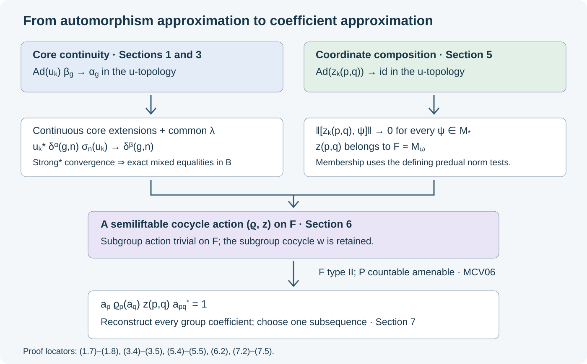

Core continuity and cocycle comparison
Approximating automorphisms does not automatically approximate the unitary coefficients of their cocycle actions. The coefficients retain phases which inner automorphisms forget. This lesson proves how common characteristic data identify the mixed coefficients, how predual estimates put the quotient defect in the central sequence algebra, and how second cohomology then corrects the coefficients themselves.
The continuity theorem first applies to arbitrary von Neumann algebras and nets. The sequence arguments subsequently use a factor \(M\) with separable predual, a faithful normal state \(\phi\), and a free ultrafilter \(\omega\) on \(\mathbb N\). The subgroup cocycle is retained throughout. Approximate innerness, equality of the specified characteristic data, and central triviality are stated hypotheses; no classification theorem is inferred from them without an intertwining argument.
Our previous inputs are standard implementations, CL01, compact-time weight-cocycle continuity, OC01–08, the regular core, LP01, the ordered cocycle chain rule, naturality, PT02, the normalized inner formula, OE03, and concrete normal functionals, CP04–06. Later sections use the central sequence construction, CFR01, bounded strong* tests, CDS02, quotient reconstruction, QCA, and exact second cohomology, MCV.
Continuous canonical extension to the core
Let \((M,H,J,\mathcal P)\) be a standard form, and let \(\varphi\) be any faithful normal semifinite weight. Put
\[ C_a(t)=[D(\varphi\circ a^{-1}):D\varphi]_t,\qquad K=L^2(\mathbb R,H). \tag{1.1} \]The regular core \(Q\) is generated on \(K\) by
\[ (\pi(x)\xi)(s)=\sigma^\varphi_{-s}(x)\xi(s),\qquad (\lambda(t)\xi)(s)=\xi(s-t). \tag{1.2} \]Let \(U_a\) be the canonical standard implementer of \(a\). Define
\[ (W_a\xi)(s)=C_a(-s)^*U_a\xi(s). \tag{1.3} \]The field is strongly continuous on every fixed vector, and its values are unitaries. Consequently it defines a unitary on \(K\): it preserves the norm integral, and the pointwise adjoint field supplies its inverse. This assertion holds also for nonseparable \(H\); strongly measurable simple-function approximation defines the Hilbert-valued \(L^2\) space and these multiplication operators.
Theorem. Conjugation by \(W_a\) restricts to a normal automorphism \(\widetilde a\) of \(Q\), with
\[ \widetilde a(\pi(x))=\pi(a(x)),\qquad \widetilde a(\lambda(t))=\pi(C_a(t))\lambda(t). \tag{1.4} \]The map \(a\mapsto\widetilde a\) is a homomorphism, is continuous for the u-topologies, commutes with the dual flow, and satisfies
\[ \widetilde{\operatorname{Ad}v}=\operatorname{Ad}\pi(v) \quad(v\in\mathcal U(M)). \tag{1.5} \]Proof. Modular transport and the cocycle formula give
\[ a\sigma^\varphi_{-s}a^{-1} =\operatorname{Ad}(C_a(-s))\sigma^\varphi_{-s}. \]Substitution in (1.3) proves the first equation in (1.4). The coefficient in \(W_a\lambda(t)W_a^*\) at \(s\) is
\[ C_a(-s)^*C_a(t-s)=\sigma^\varphi_{-s}(C_a(t)), \]by the cocycle identity. This proves the second equation.
The chain rule and simultaneous naturality give the ordered identity
\[ C_{ab}(t)=a(C_b(t))C_a(t). \tag{1.6} \]Together with \(U_{ab}=U_aU_b\), it gives \(W_aW_b=W_{ab}\) directly in (1.3). Thus \(W_{a^{-1}}\) is the inverse normalizer, so (1.4) maps the whole generated von Neumann algebra onto itself. Unitary conjugation preserves increasing positive suprema and is normal. The dual-flow implementers \(\xi(s)\mapsto e^{-irs}\xi(s)\) commute with the multiplication field \(W_a\); this proves equivariance.
The normalized inner formula from OE03, with \(v^*\) in place of its displayed unitary, gives
\[ C_{\operatorname{Ad}v}(t)=v\sigma^\varphi_t(v^*). \]Conjugation by \(\pi(v)\) has exactly the two effects in (1.4), proving (1.5).
Suppose \(a_i\to a\) in the u-topology, with an arbitrary directed index set. CL01 gives \(U_{a_i}\to U_a\) strongly, and OC01–08 give compact-time strong* convergence of \(C_{a_i}\). For \(\xi(s)=1_E(s)\eta\), where \(E\subset[-T,T]\) is measurable, the triangle inequality gives
\[ \begin{aligned} \|(W_{a_i}-W_a)\xi\|_2 &\le |E|^{1/2}\bigl(\|(U_{a_i}-U_a)\eta\|\\ &\qquad+\sup_{|s|\le T} \|(C_{a_i}(-s)^*-C_a(-s)^*)U_a\eta\|\bigr). \end{aligned} \tag{1.7} \]This tends to zero. Finite sums of these functions are dense: truncate the support of an \(L^2\) function and then use its defining simple-function approximation. The uniform bound two on \(W_{a_i}-W_a\) extends convergence to all of \(K\). No dominated-convergence assertion for arbitrary nets is needed. Since the limit is unitary, the adjoints also converge strongly, by \(\|(W_{a_i}^*-W_a^*)\xi\|=\|\xi-W_{a_i}W_a^*\xi\|\).
For a vector functional \(f_{\xi,\eta}(X)=\langle X\xi,\eta\rangle\), restriction to the unit ball of \(Q\) gives
\[ \|f_{\xi,\eta}\circ\operatorname{Ad}W_{a_i} -f_{\xi,\eta}\circ\operatorname{Ad}W_a\| \le \|\eta\|\|(W_{a_i}^*-W_a^*)\xi\| +\|\xi\|\|(W_{a_i}^*-W_a^*)\eta\|. \tag{1.8} \]Finite sums of these functionals are norm dense in \(Q_*\), by the coefficient-series construction CP04–06. Composition by every automorphism is isometric on the predual. Approximation by a finite sum therefore proves convergence for every \(f\in Q_*\). This is exactly u-continuity. \(\square\)
Which unitary sequences can be multiplied in the quotient
From now on \(M,\phi,\omega\) have the sequence hypotheses in the introduction. For a bounded sequence \(x=(x_k)\), put
\[ \|x_k\|_{\phi,\#}^2=\phi(x_k^*x_k)+\phi(x_kx_k^*),\qquad \mathcal I=\{x:\|x_k\|_{\phi,\#}\longrightarrow_\omega0\}. \tag{2.1} \]CDS02 identifies this with bounded strong* convergence along \(\omega\). Write
\[ \mathcal N=\{x\in\ell^\infty(M):x\mathcal I,\mathcal I x, x^*\mathcal I,\mathcal I x^*\subset\mathcal I\},\qquad B=\mathcal N/\mathcal I. \tag{2.2} \]The set \(\mathcal I\) is a norm-closed self-adjoint subalgebra: for two bounded null sequences \(x,y\),
\[ (xy)^*(xy)\le\|x\|_\infty^2y^*y,\qquad (xy)(xy)^*\le\|y\|_\infty^2xx^* \]coordinatewise. The defining multiplier conditions make \(\mathcal N\) a unital norm-closed *-algebra and make \(\mathcal I\) a closed two-sided ideal in it. Thus \(B\) is a unital C*-algebra. This algebra suffices for the coefficient calculations; the independently established von Neumann algebra used for cohomology is \(F=M_\omega\).
Lemma. Constants and bounded centralizing sequences lie in \(\mathcal N\). The quotient \(F=C_\omega(M)/(C_\omega(M)\cap\mathcal I)\) embeds in \(B\), commutes with \(M\), and retains its earlier finite von Neumann algebra and trace structure. If \(u_k\) are unitaries and \(\operatorname{Ad}u_k\to_\omega\eta\) in the u-topology for an automorphism \(\eta\), then \(u=(u_k)\) is a unitary of \(\mathcal N\).
Proof. Constants preserve bounded strong* null sequences under multiplication, by CDS02. For a centralizing \(x\), let \(\|x\|_\infty\le C\), let \(y\in\mathcal I\), and put \(\|y\|_\infty\le D\). One half of the seminorm of \(xy\) is bounded by \(C^2\phi(y_k^*y_k)\). For the other half, moving \(x_k\) through the functional and then applying Cauchy–Schwarz gives
\[ \begin{aligned} \phi(x_k y_ky_k^*x_k^*) &\le |\phi(y_ky_k^*x_k^*x_k)| +CD^2\|[x_k,\phi]\|\\ &\le C^2D\,\phi(y_ky_k^*)^{1/2} +CD^2\|[x_k,\phi]\|. \end{aligned} \tag{2.3} \]Here \((x\psi)(a)=\psi(ax)\), \((\psi x)(a)=\psi(xa)\), and \([x,\psi]=x\psi-\psi x\). Both terms tend to zero. Apply the same argument to \(x^*\), and then take adjoints, to obtain all four multiplier conditions. The kernel of the quotient map on \(C_\omega(M)\) is exactly its intersection with \(\mathcal I\), so the induced *-homomorphism of \(F\) is injective. Its commutation with constants and its trace and von Neumann structure are the quotient theorem in CFR01. We do not replace \(F\) by the possibly larger relative commutant in \(B\).
For the last assertion, composition by automorphisms is isometric, so u-convergence implies inverse u-convergence as in CL01. For \(y\in\mathcal I\),
\[ \phi(u_ky_ky_k^*u_k^*) \le(\phi\circ\eta)(y_ky_k^*) +D^2\|\phi\circ\operatorname{Ad}u_k-\phi\circ\eta\| \longrightarrow_\omega0. \tag{2.4} \]The other half is \(\phi(y_k^*y_k)\). Use the inverse maps and adjoints for the remaining products. This proves \(u\in\mathcal N\); its coordinatewise inverse is its adjoint. \(\square\)
For later use, a unitary sequence \(z_k\) is centralizing exactly when
\[ \operatorname{Ad}z_k\longrightarrow_\omega\mathrm{id} \quad\hbox{in the u-topology}. \tag{2.5} \]Indeed
\[ \|[z_k,\psi]\|=\|\psi\circ\operatorname{Ad}z_k-\psi\|. \tag{2.6} \]To check the norm identity, evaluate the functional difference at \(a z_k\), and use that right multiplication by \(z_k\) maps the unit ball onto itself. Formula (2.6) is the stronger membership test that will be used in Section 5.
Fixed automorphisms act coordinatewise on \(\mathcal N/\mathcal I\), since they and their inverses preserve bounded strong* null sequences. If \(\gamma_k\to_\omega\gamma\) in the u-topology, their coordinate action preserves \(C_\omega(M)\) and its null ideal by MCV05, hence gives a normal automorphism of \(F\). This will supply the required semilifts.
Common characteristic phases identify the mixed coefficients
Let \((\alpha,v^\alpha)\) and \((\beta,v^\beta)\) be normalized cocycle actions of a countable group \(G\) on \(M\), using QCA01's convention. Let \(N\triangleleft G\), and assume
\[ \alpha_n=\beta_n=\sigma_n,\qquad v^\alpha(m,n)=v^\beta(m,n)=w(m,n)\quad(m,n\in N). \tag{3.1} \]There is no assumption that \(w=1\). Use the common regular core \(Q\) from Section 1. Assume unitaries \(T_n\in Q\), with \(T_e=1\), implement \(\widetilde\sigma_n\). Set
\[ \delta^a(g,n)=v^a(g,g^{-1}ng)v^a(n,g)^* \quad(a=\alpha,\beta). \tag{3.2} \]Assume the characteristic comparison is the exact equality
\[ \widetilde a_g(T_{g^{-1}ng}) =\lambda(g,n)\delta^a(g,n)T_n, \qquad \lambda(g,n)\in\mathcal U(Z(Q)), \tag{3.3} \]with the same \(\lambda\) for both actions, and assume \(\widetilde\alpha_g|_{Z(Q)}=\widetilde\beta_g|_{Z(Q)}\). These conditions refer to the chosen common implementers. They retain the central phase, rather than only its induced inner automorphism.
Lemma. If \(u_k\in\mathcal U(M)\) satisfy \(\operatorname{Ad}u_k\circ\beta_g\to_\omega\alpha_g\) in the u-topology, then
\[ u_k^*\delta^\alpha(g,n)\sigma_n(u_k) \longrightarrow_\omega\delta^\beta(g,n) \quad\hbox{strongly*}. \tag{3.4} \]For \(U=[(u_k)]\in B\), equivalently,
\[ v^\alpha(n,g)^*\sigma_n(U)v^\beta(n,g) =v^\alpha(g,g^{-1}ng)^*U v^\beta(g,g^{-1}ng). \tag{3.5} \]Proof. Section 1 and (1.5) give convergence of the extensions \(\operatorname{Ad}u_k\circ\widetilde\beta_g\to_\omega\widetilde\alpha_g\). Taking inverses and composing yields
\[ \operatorname{Ad}u_k^* \longrightarrow_\omega\widetilde\beta_g\widetilde\alpha_g^{-1} \quad\hbox{in the u-topology on }Q. \tag{3.6} \]CL01, applied to \(Q\), converts this to pointwise bounded strong* convergence. Since \(\sigma_n(u_k)=T_nu_kT_n^*\), the expression in (3.4) has limit
\[ \widetilde\beta_g\widetilde\alpha_g^{-1} (\delta^\alpha(g,n)T_n)\,T_n^*. \]Put \(l=g^{-1}ng\). Equation (3.3) says \(\delta^\alpha(g,n)T_n=\lambda(g,n)^*\widetilde\alpha_g(T_l)\). The composed automorphism in (3.6) fixes the center, by equality of the two center actions. The limit is therefore
\[ \lambda(g,n)^*\widetilde\beta_g(T_l)T_n^* =\delta^\beta(g,n). \]All terms in (3.4) belong to \(M\). Bounded strong* convergence in the faithful normal core representation is the same intrinsic bounded strong* topology on this subalgebra, by the normal-functional tests in CP04–06 and CDS02.
Section 2 applies because \(\operatorname{Ad}u_k\to_\omega\alpha_g\beta_g^{-1}\). Equation (3.4) thus becomes the exact equality \(\delta^\alpha(g,n)\sigma_n(U)=U\delta^\beta(g,n)\) in \(B\). Multiply on the left by \(v^\alpha(g,l)^*\) and on the right by \(v^\beta(n,g)\). The definition (3.2) gives (3.5). \(\square\)
Extending comparison unitaries from a section
Put \(P=G/N\) and choose \(s:P\to G\), \(s(e)=e\). Suppose for every \(p\) there are unitaries \(u_{p,k}\), with \(u_{e,k}=1\), such that
\[ \operatorname{Ad}u_{p,k}\circ\beta_{s(p)} \longrightarrow_\omega\alpha_{s(p)} \quad\hbox{in the u-topology}. \tag{4.1} \]For the unique expression \(g=n s(p)\), define
\[ u_{g,k}=v^\alpha(n,s(p))^* \sigma_n(u_{p,k})v^\beta(n,s(p)), \qquad U_g=[(u_{g,k})]. \tag{4.2} \]The position of each adjoint follows from composition:
\[ \operatorname{Ad}u_{g,k}\,\beta_g =\operatorname{Ad}(v^\alpha(n,s(p))^*)\, \sigma_n(\operatorname{Ad}u_{p,k}\,\beta_{s(p)}) \longrightarrow_\omega\alpha_g. \tag{4.3} \]Here the equality means composition of the displayed automorphisms; it uses \(\beta_n\beta_{s(p)}=\operatorname{Ad}(v^\beta(n,s(p)))\beta_g\). Thus every \(U_g\) belongs to \(B\), \(U_n=1\), and
\[ \Gamma_g=\operatorname{Ad}(U_g)\beta_g,\qquad V(g,h)=U_g\beta_g(U_h)v^\beta(g,h)U_{gh}^* \tag{4.4} \]define a normalized cocycle action on \(B\). The algebraic perturbation proof QCA04 applies to any unital *-algebra. Equation (4.3), together with CL01 and the null-ideal tests, gives \(\Gamma_g|_M=\alpha_g\).
Proposition. For all \(n\in N\), \(g\in G\),
\[ V(n,g)=v^\alpha(n,g),\qquad V(g,n)=v^\alpha(g,n). \tag{4.5} \]Proof. Formula (4.2) gives exactly
\[ V(n,s(p))=\sigma_n(U_{s(p)})v^\beta(n,s(p))U_{ns(p)}^* =v^\alpha(n,s(p)). \tag{4.6} \]For \(n'=s(p)n s(p)^{-1}\), (3.5) gives the second expression for the same comparison unitary,
\[ U_{s(p)n} =v^\alpha(s(p),n)^*U_{s(p)}v^\beta(s(p),n). \tag{4.7} \]Consequently \(V(s(p),n)=v^\alpha(s(p),n)\). Also \(V(m,n)=w(m,n)\), since the subgroup unitaries \(U_m,U_n,U_{mn}\) are one.
Write \(g=m s(p)\). The cocycle identity for \(V\) on \((n,m,s(p))\) gives
\[ V(n,m s(p)) =\Gamma_n(V(m,s(p)))^*\,V(n,m)V(nm,s(p)). \tag{4.8} \]Substitute (4.6), \(V(n,m)=w(n,m)\), and \(\Gamma_n|_M=\alpha_n\). The result is the identical cocycle formula for \(v^\alpha(n,m s(p))\). To prove the right mixed identity, write \(g=s(p)m\) instead. The identity on \((s(p),m,n)\) gives
\[ V(s(p)m,n) =V(s(p),m)^*\,\Gamma_{s(p)}(w(m,n))\,V(s(p),mn). \tag{4.9} \]Every term on the right is again its \(\alpha\)-counterpart, proving (4.5). No subgroup-cocycle factor has been set to one. \(\square\)
The quotient defect is centralizing in predual norm
For \(a=\alpha,\beta\), use the same right section defect and quotient coefficient as QCA02:
\[ m(p,q)=s(pq)^{-1}s(p)s(q),\qquad c^a(p,q)=v^a(s(p),s(q))v^a(s(pq),m(p,q))^*. \tag{5.1} \]Define actual coordinate unitaries
\[ \begin{aligned} d_k(p,q)&=u_{p,k}\beta_{s(p)}(u_{q,k}) c^\beta(p,q)u_{pq,k}^*,\\ z_k(p,q)&=d_k(p,q)c^\alpha(p,q)^*. \end{aligned} \tag{5.2} \]Here \(u_{pq,k}\) is the section unitary indexed by the coset product; it is not \(u_{s(p)s(q),k}\).
Theorem. For every \(p,q\), \((z_k(p,q))_k\) is centralizing. In particular its class is a unitary of the designated algebra \(F\).
Proof. Put \(\gamma_{p,k}=\operatorname{Ad}u_{p,k}\,\beta_{s(p)}\). The quasi-cocycle composition identity and direct multiplication give the exact coordinate identity
\[ \gamma_{p,k}\gamma_{q,k} =\operatorname{Ad}(d_k(p,q))\gamma_{pq,k}\sigma_{m(p,q)}. \tag{5.3} \]Therefore
\[ \operatorname{Ad}(z_k(p,q)) =\gamma_{p,k}\gamma_{q,k}\sigma_{m(p,q)}^{-1} \gamma_{pq,k}^{-1}\operatorname{Ad}(c^\alpha(p,q)^*). \tag{5.4} \]Every \(\gamma_{p,k}\) converges in the u-topology to \(\alpha_{s(p)}\). Products and inverses preserve this convergence by CL01. For products, this also follows directly by inserting a fixed intermediate functional and using the isometry of composition on the predual; only finitely many factors occur. The limit in (5.4) is
\[ \alpha_{s(p)}\alpha_{s(q)}\sigma_{m(p,q)}^{-1} \alpha_{s(pq)}^{-1}\operatorname{Ad}(c^\alpha(p,q)^*) =\mathrm{id}, \]by the \(\alpha\)-version of the quasi-cocycle identity. Equations (2.5)–(2.6) now give
\[ \|[z_k(p,q),\psi]\|\longrightarrow_\omega0 \qquad(\psi\in M_*). \tag{5.5} \]This proves the asserted membership from its defining predual tests. No replacement of centralizing sequences by merely central sequences has been made. \(\square\)

Core continuity proves (3.4); the coordinate identity (5.4) proves (5.5). These are distinct inputs to the quotient cocycle. Second cohomology then supplies its correction. The diagram's arrows refer to proved implications, with the type-II and amenability hypotheses retained at the final arrow.
The genuine semiliftable quotient action
Assume in addition that each \(\sigma_n\) is centrally trivial. By CFR02 its induced automorphism of \(F\) is the identity, for the chosen ultrafilter as well as for ordinary centralizing sequences. No identification of centrally trivial automorphisms with a core-inner kernel is used here; the central-triviality hypothesis is separate from the implementers in Section 3.
Let
\[ \varrho_p=\Gamma_{s(p)}|_F,\qquad z(p,q)=[(z_k(p,q))]\in F. \tag{6.1} \]Every \(\varrho_p\) is a normal automorphism: its coordinate semilift is \(\gamma_{p,k}\to_\omega\alpha_{s(p)}\), and MCV05 proves preservation of the centralizing conditions, the null ideal, the trace, and normality, including for the inverse.
Theorem. The pair \((\varrho,z)\) is a normalized semiliftable cocycle action of \(P\) on \(F\):
\[ \varrho_p\varrho_q=\operatorname{Ad}(z(p,q))\varrho_{pq}, \qquad z(p,q)z(pq,r)=\varrho_p(z(q,r))z(p,qr). \tag{6.2} \]Proof. In \(B\), formula (4.4) and the perturbation identity QCA04 give
\[ \begin{aligned} d(p,q)&:=V(s(p),s(q))V(s(pq),m(p,q))^*\\ &=U_{s(p)}\beta_{s(p)}(U_{s(q)})c^\beta(p,q)U_{s(pq)}^*. \end{aligned} \tag{6.3} \]For this equality the subgroup term \(U_{m(p,q)}\) is one. Thus \(z=dc^{\alpha *}\), exactly as in Section 5.
All hypotheses of the subalgebra calculation QCA06 are now supplied: \(F\) commutes with \(M\); every \(\Gamma_g\) and its inverse preserve \(F\), by (4.3) and MCV05; \(\Gamma_g|_M=\alpha_g\); the mixed coefficients agree by (4.5); \(\Gamma_n=\sigma_n\) acts trivially on \(F\); and \(dc^{\alpha *}\in F\) by (5.5). The QCA06 proof is a finite algebraic calculation in the containing algebra and only uses normality for the restrictions to \(F\), already proved here. It therefore applies in the unital C*-algebra \(B\).
More explicitly, the composition formula reduces to the first equation of (6.2), since the subgroup action and conjugation by the fixed \(M\)-coefficient act trivially on \(F\). For the cocycle equation, apply the full associator QCA03 to \(V\) and \(v^\alpha\). Their mixed coefficients and their two subgroup-cocycle factors agree by (4.5) and (3.1). Substitute \(d=zc^\alpha\). Commutation with \(M\) moves the \(z\)-factors to the left; the two remaining products are the identical unitary \(K\) in QCA06 equations (6.5)–(6.6). Right cancellation of \(K\) gives the second equation in (6.2), without dropping either factor of \(w\). Normalization follows from \(s(e)=e\) and \(u_{e,k}=1\). \(\square\)
Correcting every coefficient and choosing ordinary approximants
Retain all the preceding hypotheses. Suppose \(P\) is amenable and \(F\) is of type II. In particular the type assumption is supplied by CFR06 when \(M\cong M\bar\otimes R_{\mathrm{hyp}}\). Amenability of \(G\) implies amenability of \(P\) by the finite-layer proof MCV07; alternatively amenability of \(P\) can be assumed directly.
Theorem. There are unitaries \(t_{g,k}\in M\), with \(t_{n,k}=1\) for \(n\in N\), such that, after choosing one ordinary subsequence of coordinates,
\[ \begin{aligned} \operatorname{Ad}t_{g,k}\,\beta_g&\longrightarrow\alpha_g &&\text{in the u-topology},\\ t_{g,k}\beta_g(t_{h,k})v^\beta(g,h)t_{gh,k}^* &\longrightarrow v^\alpha(g,h) &&\text{strongly*} \end{aligned} \tag{7.1} \]for every \(g,h\in G\). Thus all the automorphism and cocycle tests can be met simultaneously on any prescribed finite sets.
Proof. Apply MCV06 to the actual semilifts and cocycle in Section 6. It supplies normalized unitaries \(a_p\in F\) satisfying
\[ a_p\varrho_p(a_q)z(p,q)a_{pq}^*=1. \tag{7.2} \]The exact centralizing-unitary lifting theorem used in MCV06 gives representatives \(a_{p,k}\in\mathcal U(M)\); take \(a_{e,k}=1\). Put
\[ t_{g,k}=a_{gN,k}u_{g,k},\qquad T_g=a_{gN}U_g\in B. \tag{7.3} \]The reconstruction calculation QCA07, now with all its inputs supplied, gives
\[ T_g\beta_g(T_h)v^\beta(g,h)T_{gh}^*=v^\alpha(g,h) \quad(g,h\in G). \tag{7.4} \]It applies in \(B\) for the same algebraic reason as in Section 6. In particular it retains the original subgroup cocycle. Equality (7.4) means that the difference between the coordinate expressions belongs to \(\mathcal I\); hence it tends strongly* to zero along \(\omega\).
Since the \(a_{p,k}\) are centralizing, \(\operatorname{Ad}a_{p,k}\to_\omega\mathrm{id}\) in the u-topology. Combine this with (4.3) and continuity of products to obtain the first line of (7.1) along \(\omega\). Also \(t_{n,k}=1\) coordinatewise.
Here is the single selection which makes both limits ordinary. Choose increasing finite subsets \(E_j\subset G\) with union \(G\), and a countable norm-dense family \((\psi_j)\subset M_*\). For each \(j\), the following finitely many inequalities hold on a set in \(\omega\):
\[ \begin{gathered} \|\psi_i\circ(\operatorname{Ad}t_{g,k}\,\beta_g) -\psi_i\circ\alpha_g\|<1/j \quad(g\in E_j,\ i\le j),\\ \|t_{g,k}\beta_g(t_{h,k})v^\beta(g,h)t_{gh,k}^* -v^\alpha(g,h)\|_{\phi,\#}<1/j \quad(g,h\in E_j). \end{gathered} \tag{7.5} \]Recursively choose \(k_j>k_{j-1}\) in that set; freeness of \(\omega\) permits removal of any finite initial interval. For each fixed \(g,h,i\), its inequality then holds for every sufficiently large \(j\). Norm density and the isometry of automorphism pullbacks extend the first limit to every \(\psi\in M_*\). The coordinate differences in the second line have norm at most two; CDS02 turns their \(\phi\)-sharp convergence into bounded strong* convergence. Relabel this common subsequence to obtain (7.1).
The resulting convergence also gives the functional multiplication tests used in approximation arguments. If \(b_j\) is any of these bounded strong* null differences and \(\psi\in M_*^+\), Cauchy–Schwarz yields
\[ \|b_j\psi\|\le\psi(1)^{1/2}\psi(b_j^*b_j)^{1/2},\qquad \|\psi b_j\|\le\psi(1)^{1/2}\psi(b_jb_j^*)^{1/2}. \tag{7.6} \]They tend to zero. Decomposition into finitely many positive normal functionals, as in CP06, proves the same assertion for arbitrary normal functionals. This proves the finite-test assertion without suppressing the normalization of a positive functional. \(\square\)
The theorem produces approximating cochains in the original factor. It does not say that the individual \(t_{g,k}\) converge, or that any single row implements exact cocycle conjugacy. Producing a conjugating automorphism still requires the two-sided intertwining construction.
A phase test which detects the wrong adjoints
Let \(G=\mathbb Z/4\mathbb Z\), \(N=\{0,2\}\), with section \(s(0+N)=0\), \(s(1+N)=1\). Write the group additively. Choose scalar unitaries
\[ \begin{gathered} a_0=b_0=a_1=b_1=a_3=1,\qquad a_2=b_2=e^{i\theta},\qquad b_3=e^{i\rho},\\ \theta=\pi/5,\qquad\rho=\pi/3. \end{gathered} \tag{8.1} \]They may be viewed in \(\mathbb C\), or as scalar multiples of the unit in any nonzero factor. Set
\[ \alpha_g=\beta_g=\mathrm{id},\qquad v^\alpha(g,h)=a_ga_ha_{g+h}^*,\qquad v^\beta(g,h)=b_gb_hb_{g+h}^*. \tag{8.2} \]Both are normalized cocycle actions: each side of the cocycle equation telescopes to \(a_ga_ha_l a_{g+h+l}^*\), and likewise for \(b\). The subgroup cocycles agree and are nontrivial: \(w(2,2)=e^{2i\theta}\ne1\). The mixed defects \(\delta^\alpha,\delta^\beta\) are both one, since these scalar cocycles are symmetric on the abelian group. Thus \(T_n=1\), \(\lambda(g,n)=1\) satisfy (3.3), including in a continuous core.
Take the two section comparison unitaries to be one. Equation (4.2) gives
\[ U_3=v^\alpha(2,1)^*v^\beta(2,1) =e^{-i\theta}e^{i(\theta-\rho)}=e^{-i\rho}. \tag{8.3} \]Indeed all \(U_g=a_gb_g^*\), and multiplying out (4.4) gives \(V(g,h)=v^\alpha(g,h)\) for every pair.
If instead one places the adjoints on the other factors and uses \(U'_3=v^\alpha(2,1)v^\beta(2,1)^*=e^{i\rho}\), the required mixed coefficient becomes
\[ V'(2,1)=v^\beta(2,1)U_3'^* =e^{i(\theta-2\rho)}. \]Its distance from \(v^\alpha(2,1)=e^{i\theta}\) is
\[ |e^{-2i\rho}-1|=2|\sin\rho|=\sqrt3. \tag{8.4} \]Thus automorphisms alone cannot detect this error: they are all the identity, whereas the coefficient equality fails by a fixed amount. The calculation also tests a nonsplit quotient section, since \(s(1+N)+s(1+N)=2\in N\).
On \(\mathbb C\), this example tests Sections 3–6 but does not meet Section 7's type-II hypothesis. Taking the same scalar data on \(R_{\mathrm{hyp}}\) meets that hypothesis by CFR06; the displayed exact cochain already performs the correction in this example.
Further reading. T. Masuda, Unified approach to classification of actions of discrete amenable groups on injective factors, free author preprint, arXiv:1006.1176, Section 4, Lemmas 4.1–4.7. The core-continuity argument above uses the earlier programme proofs listed in the introduction; Sections 2–7 retain the defining predual conditions, the ordered coefficients, and a general subgroup cocycle.
Provenance. Original exposition and proofs by OpenAI GPT-6 Astra at Ultra reasoning effort. The original prose and editable figure are dedicated under CC0.